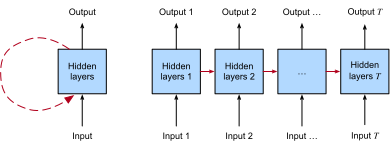

Réseaux de neurones récurrents
Jusqu’à présent, nous nous sommes concentrés principalement sur des données de longueur fixe. Lors de l’introduction de la régression linéaire et logistique dans le chap_regression et le chap_classification et des perceptrons multicouches dans le chap_perceptrons, nous étions satisfaits de supposer que chaque vecteur de caractéristiques \(\mathbf{x}_i\) se composait d’un nombre fixe de composantes \(x_1, \dots, x_d\), où chaque caractéristique numérique \(x_j\) correspondait à un attribut particulier. Ces ensembles de données sont parfois appelés tabulaires, car ils peuvent être disposés dans des tableaux, où chaque exemple \(i\) possède sa propre ligne, et chaque attribut sa propre colonne. Crucialement, avec les données tabulaires, nous supposons rarement une structure particulière sur les colonnes.
Par la suite, dans le chap_cnn, nous sommes passés aux données d’images, où les entrées consistent en des valeurs de pixels brutes à chaque coordonnée d’une image. Les données d’image ne correspondaient guère au profil d’un ensemble de données tabulaires prototypique. Là, nous avons dû faire appel aux réseaux de neurones convolutionnels (CNNs) pour gérer la structure hiérarchique et les invariances. Cependant, nos données étaient toujours de longueur fixe. Chaque image Fashion-MNIST est représentée sous la forme d’une grille de \(28 \times 28\) valeurs de pixels. De plus, notre objectif était de développer un modèle qui ne regardait qu’une seule image puis produisait une seule prédiction. Mais que devrions-nous faire face à une séquence d’images, comme dans une vidéo, ou lorsqu’on nous demande de produire une prédiction structurée séquentiellement, comme dans le cas du légendage d’images ?
Un très grand nombre de tâches d’apprentissage nécessitent de traiter des données séquentielles. Le légendage d’images, la synthèse vocale et la génération de musique exigent tous que les modèles produisent des sorties composées de séquences. Dans d’autres domaines, tels que la prédiction de séries temporelles, l’analyse vidéo et la recherche d’informations musicales, un modèle doit apprendre à partir d’entrées qui sont des séquences. Ces exigences surviennent souvent simultanément : des tâches telles que la traduction de passages de texte d’une langue naturelle à une autre, la participation à un dialogue ou le contrôle d’un robot, exigent que les modèles ingèrent et produisent des données structurées séquentiellement.
Les réseaux de neurones récurrents (RNNs) sont des modèles d’apprentissage profond qui capturent la dynamique des séquences via des connexions récurrentes, qui peuvent être pensées comme des cycles dans le réseau de nœuds. Cela peut sembler contre-intuitif au début. Après tout, c’est la nature à propagation avant (feedforward) des réseaux de neurones qui rend l’ordre de calcul sans ambiguïté. Cependant, les arcs récurrents sont définis de manière précise qui garantit qu’aucune ambiguïté de ce type ne puisse survenir. Les réseaux de neurones récurrents sont déroulés à travers les pas de temps (ou les pas de séquence), avec les mêmes paramètres sous-jacents appliqués à chaque pas. Alors que les connexions standard sont appliquées de manière synchrone pour propager les activations de chaque couche à la couche suivante au même pas de temps, les connexions récurrentes sont dynamiques, passant des informations à travers les pas de temps adjacents. Comme le révèle la vue dépliée dans le fig_unfolded-rnn, les RNNs peuvent être pensés comme des réseaux de neurones à propagation avant où les paramètres de chaque couche (à la fois conventionnels et récurrents) sont partagés à travers les pas de temps.

Comme les réseaux de neurones plus largement, les RNNs ont une longue histoire couvrant plusieurs disciplines, trouvant leur origine comme des modèles du cerveau popularisés par les chercheurs en sciences cognitives et adoptés par la suite comme des outils de modélisation pratiques employés par la communauté de l’apprentissage automatique. Comme nous le faisons pour l’apprentissage profond plus largement, dans ce livre nous adoptons la perspective de l’apprentissage automatique, en nous concentrant sur les RNNs comme des outils pratiques qui ont gagné en popularité dans les années 2010 grâce à des résultats révolutionnaires sur des tâches aussi diverses que la reconnaissance de l’écriture manuscrite [graves2008novel], la traduction automatique [Sutskever.Vinyals.Le.2014], et la reconnaissance de diagnostics médicaux [Lipton.Kale.2016]. Nous renvoyons le lecteur intéressé par plus de matériel de base à une revue complète accessible au public [Lipton.Berkowitz.Elkan.2015]. Nous notons également que le caractère séquentiel n’est pas propre aux RNNs. Par exemple, les CNNs que nous avons déjà introduits peuvent être adaptés pour traiter des données de longueur variable, par exemple des images de résolution variable. De plus, les RNNs ont récemment cédé une part de marché considérable aux modèles Transformer, qui seront couverts dans le chap_attention-and-transformers. Cependant, les RNNs se sont imposés comme les modèles par défaut pour gérer une structure séquentielle complexe dans l’apprentissage profond, et restent des modèles de base pour la modélisation séquentielle à ce jour. Les histoires des RNNs et de la modélisation de séquences sont inextricablement liées, et ce chapitre porte tout autant sur les bases des problèmes de modélisation de séquences que sur les RNNs eux-mêmes.Une intuition clé a ouvert la voie à une révolution dans la modélisation des séquences. Bien que les entrées et les cibles pour de nombreuses tâches fondamentales en apprentissage automatique ne puissent pas être facilement représentées sous forme de vecteurs de longueur fixe, elles peuvent néanmoins souvent être représentées comme des séquences de longueur variable de vecteurs de longueur fixe. Par exemple, les documents peuvent être représentés comme des séquences de mots ; les dossiers médicaux peuvent souvent être représentés comme des séquences d’événements (consultations, médicaments, procédures, tests de laboratoire, diagnostics) ; les vidéos peuvent être représentées comme des séquences de longueur variable d’images fixes.
Bien que les modèles de séquences soient apparus dans de nombreux domaines d’application, la recherche fondamentale dans le domaine a été principalement portée par les progrès sur les tâches de base du traitement du langage naturel. Ainsi, tout au long de ce chapitre, nous concentrerons notre exposition et nos exemples sur les données textuelles. Si vous maîtrisez ces exemples, alors l’application des modèles à d’autres modalités de données devrait être relativement simple. Dans les prochaines sections, nous introduisons la notation de base pour les séquences et quelques mesures d’évaluation pour évaluer la qualité des sorties des modèles structurés séquentiellement. Après cela, nous discutons des concepts de base d’un modèle de langage et utilisons cette discussion pour motiver nos premiers modèles RNN. Enfin, nous décrivons la méthode de calcul des gradients lors de la rétropropagation à travers les RNN et explorons certains défis souvent rencontrés lors de l’entraînement de tels réseaux, motivant les architectures RNN modernes qui suivront dans le chap_modern_rnn.